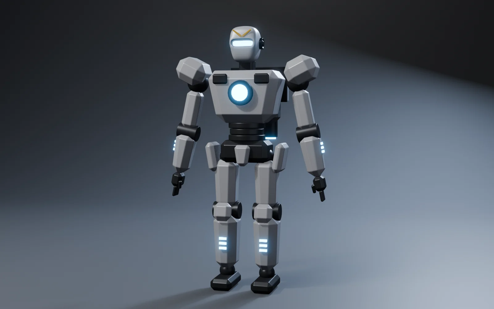
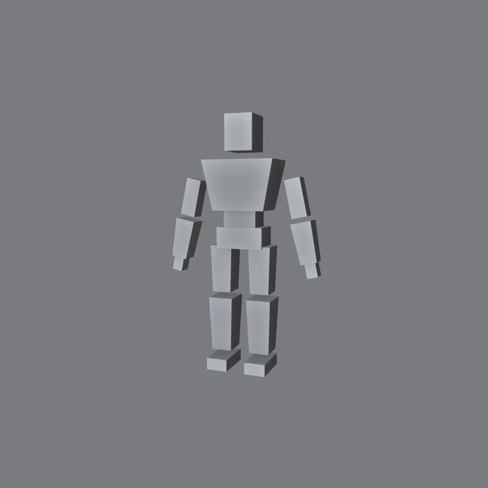
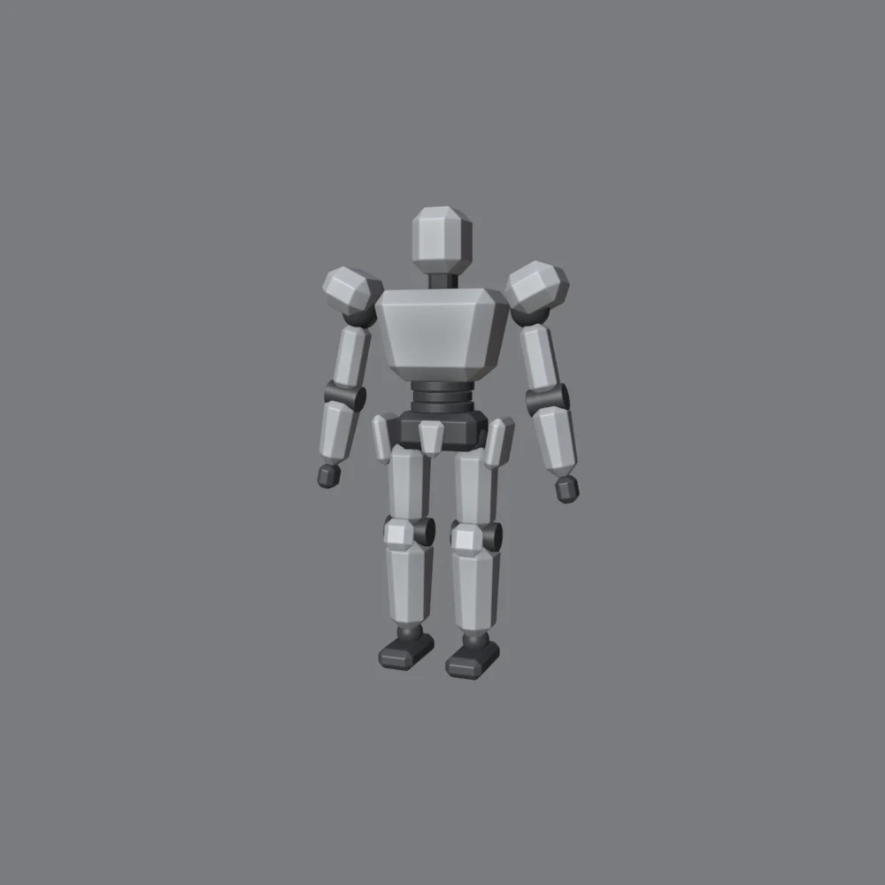
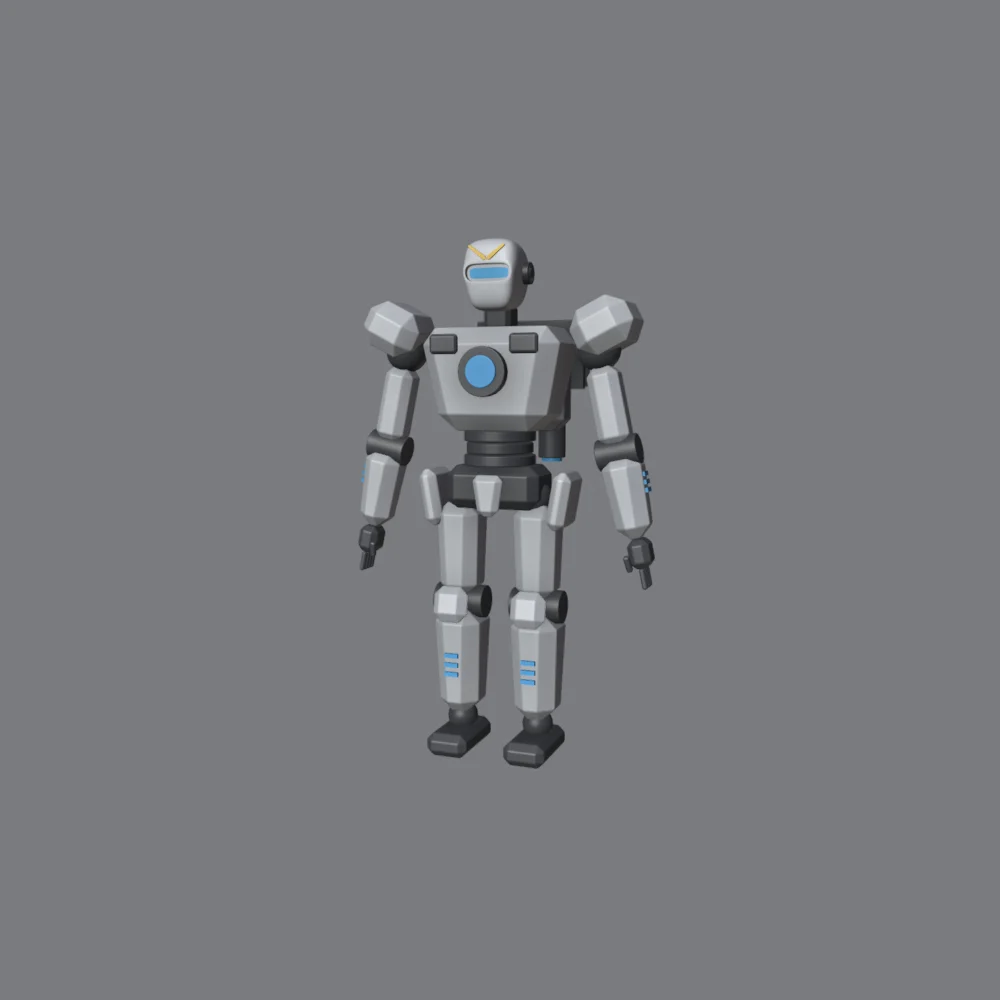
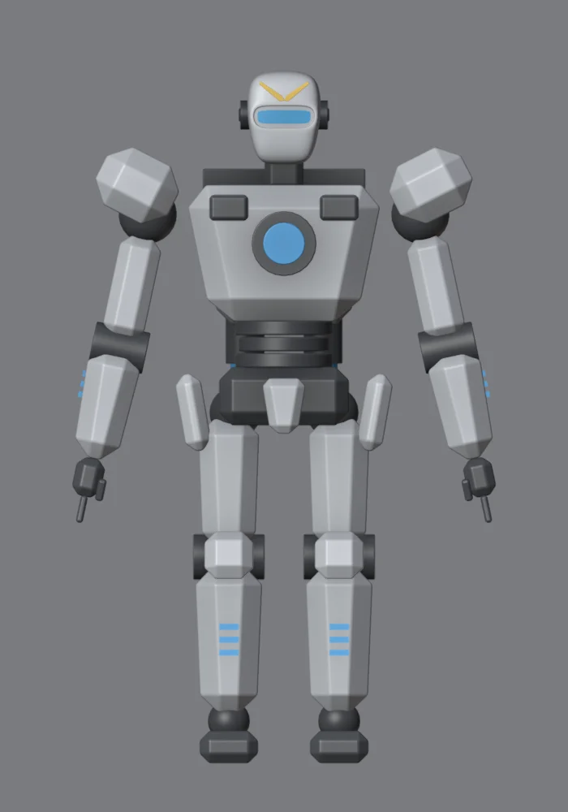
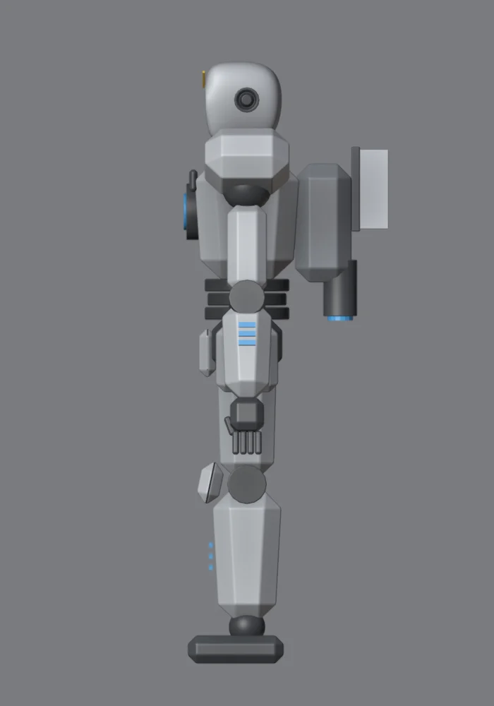
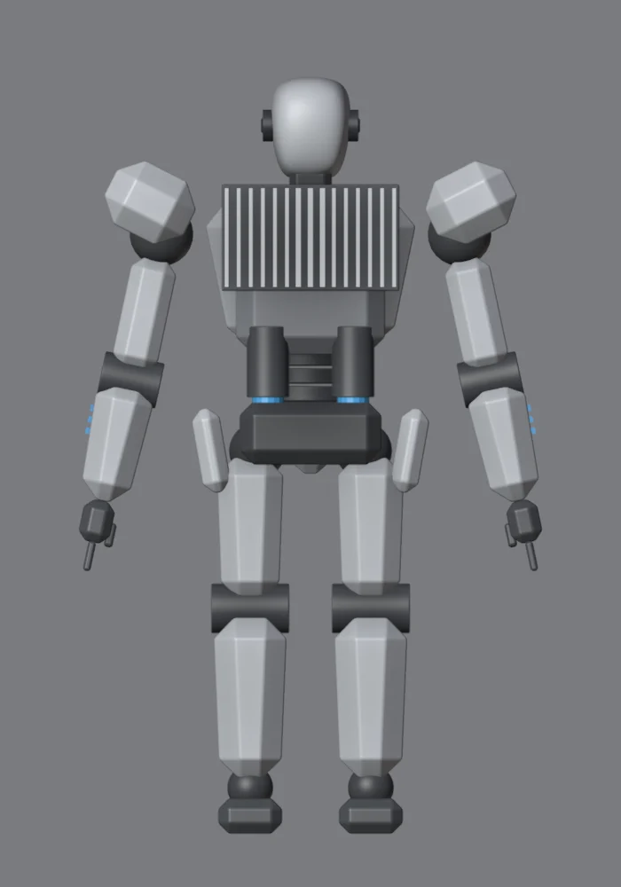

Lo que vas a forjar // objetivo

El plan de piezas // producción
Un personaje completo abruma si lo ves como un todo. Divídelo en piezas y cada pieza será un módulo que ya dominas:
| Parte | Técnica | Módulo |
|---|---|---|
| Cabeza | Subdivisión + support loops, visor emisivo, cresta en V | 04 |
| Núcleo del pecho | Inset/Extrude, emisivo, anillo | 01 |
| Placas de blindaje | Chaflanes, líneas de panel, luces incrustadas | 03 |
| Sombreado limpio | Bevel + Harden Normals + Weighted Normal en todo | 02 |
| Mochila | Kitbash: disipadores, módulos y propulsores | 05 |
| Silueta y formas | Blockout, lenguaje de formas, reparto del detalle | 06 |
| Articulaciones | Pivotes, jerarquía y pistones | 07 |
| Materiales y render | Pintura, desgaste, emisivos y estudio | 08 |
Organízate en colecciones: Cabeza, Torso, Brazo_D, Pierna_D, Mochila, Cortadores… Con 100+ objetos, el Outliner ordenado te salva la vida. Ocultar una colección entera (el ojo) te deja trabajar sin estorbos.
Gíralo por fases // 3D
Blockout

- Altura total de unos 2 m (escala humana grande). Una caja por masa: pies, espinillas, muslos, pelvis, abdomen, pecho, cabeza, brazos y antebrazos.
- Solo modela la mitad derecha y añade un modificador Mirror en X a cada pieza, con Mirror Object = un Empty en el centro del cuerpo. Todo lo que cambies en un lado aparece en el otro.
- No pases de aquí hasta que la silueta te convenza (modo silueta del módulo 6).
Truco: pon un maniquí humano de referencia al lado (Shift+A → Mesh → Monkey escalado, o una persona en imagen de referencia de 1,8 m) para no perder la escala.
Proporciones mecha
| Rasgo | Efecto |
|---|---|
| Hombros anchos con hombreras grandes | Fuerza y presencia; es lo primero que se lee de un mecha. |
| Cintura estrecha (abdomen segmentado) | Contraste con el pecho: forma de «V» heroica. |
| Pecho que se estrecha hacia abajo (taper) | Refuerza la V. En Blender: selecciona la fila de abajo y S 0.75. |
| Cabeza pequeña | Hace al robot más grande e imponente. Las cabezas grandes lo vuelven «mono». |
| Espinillas y pies grandes | Estabilidad visual: parece que aguanta su peso. |

Estructura y blindaje
El secreto de los diseños tipo Gundam es que hay dos capas:
- Estructura interna (oscura): articulaciones, abdomen segmentado, cuello, manos. Es «el esqueleto mecánico».
- Blindaje (blanco): placas que cubren la estructura, con huecos en las articulaciones para que se vea el mecanismo.
- Cada caja del blockout: modo edición, A, Ctrl+B con 1 segmento → todas las aristas achaflanadas.
- Articulaciones: esferas en hombros, caderas y tobillos, y cilindros en codos y rodillas (bisagras del módulo 7).
- Separa el blindaje de las articulaciones con huecos: el oscuro se ve entre el blanco.
- Rodilleras y hombreras ligeramente giradas: las piezas en ángulo dan dinamismo.
Detalle

- Cabeza:
File → Appendde tu cabeza del módulo 4, escalada. O arrástrala desde tu biblioteca. - Núcleo: un anillo oscuro y un disco emisivo en el centro del pecho. Es el punto focal.
- Luces: guiones emisivos con Array en antebrazos y espinillas, la misma luz azul en todo el cuerpo.
- Manos: palma + cuatro dedos + pulgar, todos cajas achaflanadas. Con dedos sencillos basta: el ojo no se detiene en ellos.
- Mochila: una caja con disipadores y dos propulsores con tobera emisiva, piezas de tu kit del módulo 5.
- Líneas de panel (opcional): cortadores del módulo 3 sobre las placas grandes (pecho y espinillas).
Reparto: mira el render: el detalle se concentra en el pecho, la cabeza y las articulaciones. Muslos y espinillas tienen grandes zonas limpias. Es el 70/30 del módulo 5.
Pose
- Pon el origen de cada pieza (o un Empty) en el centro de su articulación (módulo 7).
- Jerarquía: pelvis → torso → hombro → brazo → antebrazo → mano, y pelvis → muslo → espinilla → pie.
- Empieza en «pose A»: brazos separados unos 12°, como en el render. Es la pose de trabajo estándar.
- Para el render final, prueba una pose con peso: el cuerpo apoyado más en una pierna, el torso girado y la cabeza mirando a cámara. O ponle tu espada-arma del módulo 6 en la mano.
- Si quieres animarlo, pasa la jerarquía a un Armature (módulo 7, paso 6).
Render
- Materiales del módulo 8: pintura blanca con desgaste en los bordes, estructura grafito y emisivos azules.
- Estudio del módulo 0, con la contraluz fuerte para recortar la silueta.
- Cámara: focal larga (50–85 mm) y ligeramente desde abajo, para que el robot parezca grande.
- Glare en el compositor para que brillen el núcleo y el visor.
Hoja de giro // presentación
Así se presentan los diseños de personajes: frente, perfil y espalda en vista ortográfica. Te sirve para revisar proporciones y para tu portfolio.



Cámara ortográfica: en las propiedades de la cámara, Type: Orthographic y ajusta el Orthographic Scale para que quepa el personaje. Haz 3 cámaras y cambia entre ellas con Ctrl+Num 0.
Y ahora, vuela // siguiente nivel
Has terminado la ruta. Con lo que sabes puedes modelar casi cualquier mecha. Ideas para seguir creciendo, todas gratuitas:
Un androide con tu sello
Repite este módulo con tu propio diseño: otro lenguaje de formas, otra paleta y otra silueta. Es el mejor ejercicio que existe.
Detalle por capas
Líneas de panel en cada placa, decals (texto, números de serie) con planos y texturas de imagen, y pernos en cada junta.
Animación
Armature + IK en las piernas y un ciclo de caminar sencillo. Tu robot cobra vida.
Escena
Pon a tu androide en un hangar hecho con tu kit, con la espada-arma colgada de un soporte. Un render de escena completo.
Geometry Nodes
Repartir tornillos, cables o greebles proceduralmente. Es el siguiente gran salto de Blender.
El manual oficial
docs.blender.org: gratuito, en castellano y completísimo. Úsalo cuando quieras saber qué hace cada opción.